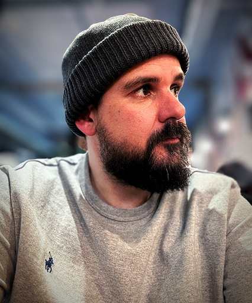

Hi, I’m Rober González.
Senior Software Designer focused on AI, based in Spain — working remotely.
Currently at Maisa AI, shaping how people interact with AI and Digital Workers.

15+ years across startups, agencies, and enterprise (Fresh People, Populate, NTT Data), for clients like Santander, IAG, Acciona, and Airbus.
I work across Product Design, Web Design, and Data Visualization — from research to frontend code.
Find me on LinkedIn and
Instagram, by Email, or in my CV.
Right now it’s --:--:-- and … here.